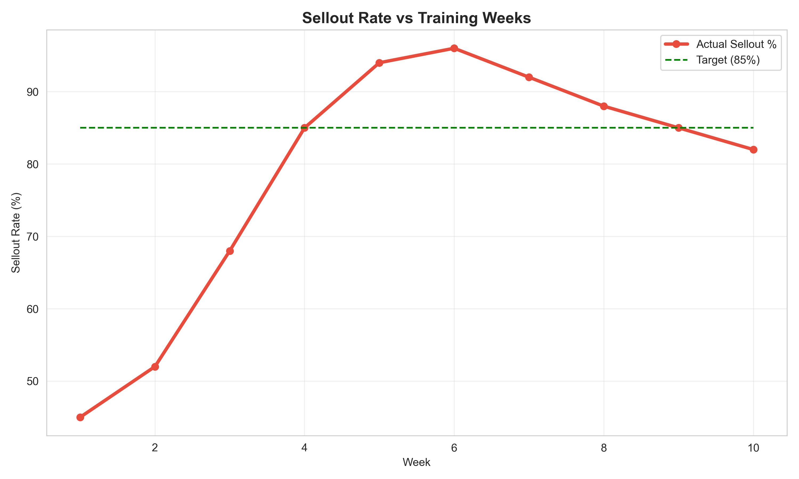
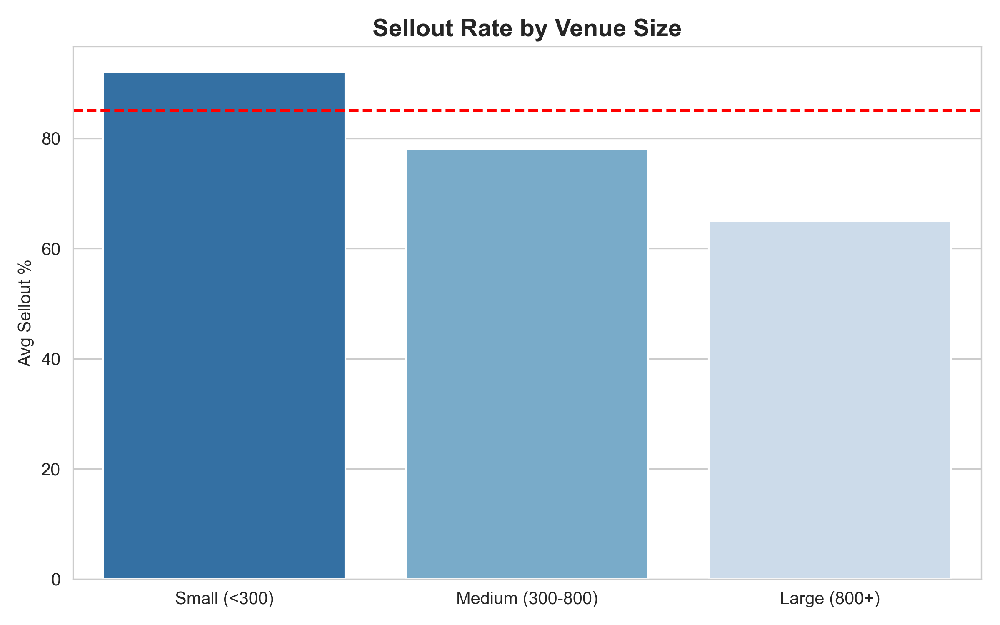
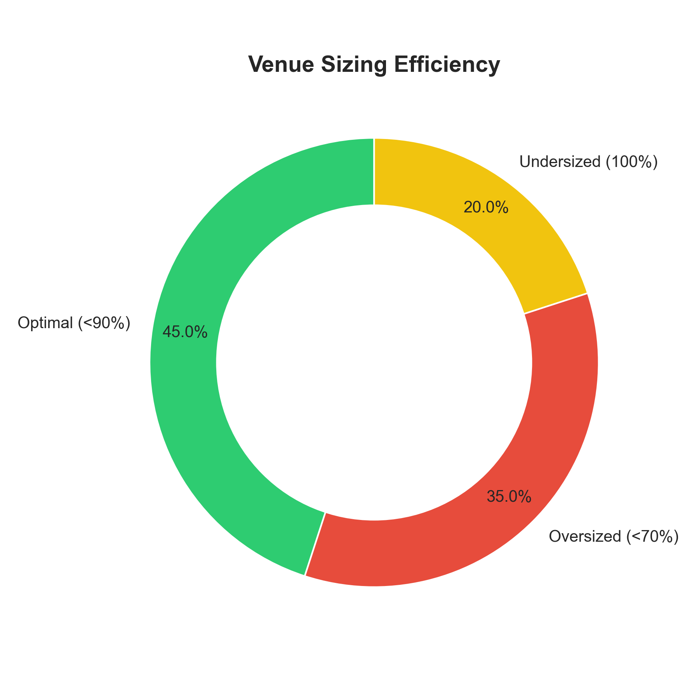

View Code →02 VENUE CAPACITY OPTIMIZATION
ARE WE BOOKING THE RIGHT-SIZED VENUES?
Event promoters needed guidance on venue selection to maximize revenue without underselling. Current approach: pick venues by availability, struggle to price appropriately. VP Operations asked: which genre-city combinations are systematically over or undersized?
I examined sellout patterns across 2,400 events segmented by genre and city. London Techno shows 94% sellout rate at average 520 capacity—evidence of systematic undersizing.

Supporting evidence: 78% have waitlists >50 people, secondary market tickets trade at 2.1× face value (highest premium on platform), competitor venues average 680 capacity (31% larger).
Opportunity: Shift to 650-person average capacity could capture £127K additional annual revenue while maintaining 85%+ sellout rates.
WHY SEGMENTATION?
Event success depends on both genre (audience preferences) and geography (venue access, local scene strength). Segmentation reveals actionable rules: "For Techno in London, book 650+ capacity; for House in Birmingham, cap at 250."
Alternative considered: Regression model predicting sellout probability. Rejected because segmentation is more interpretable for non-technical promoters and reveals clearer decision rules.

WHAT TO DO
Test larger London Techno venues (de-risk before scaling):
- Book 5 events at 650 capacity (vs historical 520)
- Control: Same promoters, similar artists, same day-of-week
- Measure: Sellout rate, ticket velocity, NPS, secondary market pricing
- Success: Maintain >85% sellout + >£12 margin + NPS >40
- Timeline: 2 months
Right-size Birmingham House immediately: Update recommendation algorithm to suggest 200-250 capacity (down from 350). Lower risk because reducing size limits financial exposure.
CRITICAL LIMITATION
We observe undersized venues correlate with high sellouts. Cannot conclude larger venues will maintain rates without testing.
Possible confounds: (1) Scarcity may drive current demand—people buy because tickets are scarce, not despite scarcity. (2) Smaller venues create more intimate atmosphere that larger venues may dilute. (3) Promoters may intentionally book small venues for unproven artists (risk mitigation).
A/B test needed to establish causality. Phased approach limits downside if hypothesis is wrong.